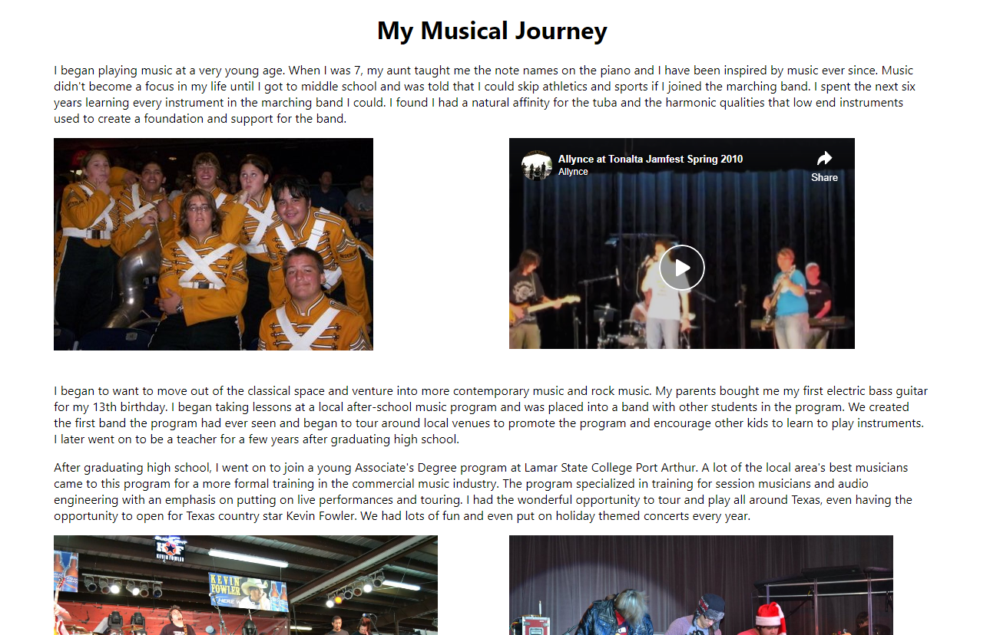

I solicited feedback from two friends. This is what the site looked like at the time:
One friend assisted with proofreading my work, while another mentioned layout inconsistencies.
Main inconsistency being that there was a line separation on the home page but not the music page.
After revising, I went back and added lines to create space and uniformity on the music page. See below.